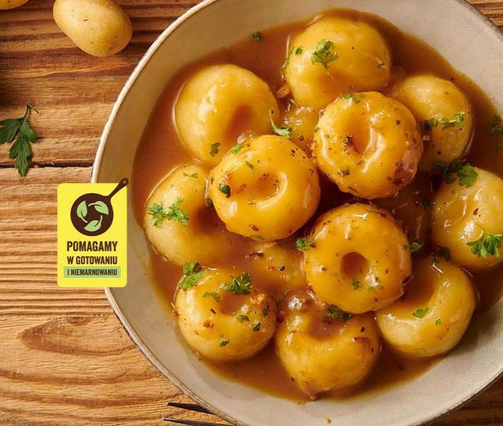
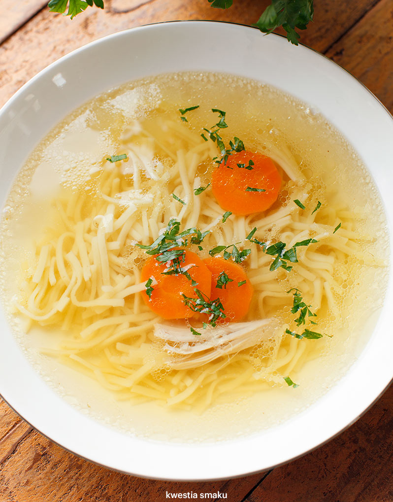

Gazeta kulinarna
Kluski Śląskie
ok. 500 g ugotowanych ziemniaków
mąka ziemniaczana / skrobia ziemniaczana
1 jajko
sól
Ziemniaki obrać, ugotować, odcedzić i od razu dokładnie rozgnieść praską lub zmielić w maszynce.
Ziemniaki wyłożyć na talerz i uklepać. Wykroić 1/4 część ziemniaków, wyjąć je i odłożyć. W wolne miejsce wsypać mąkę ziemniaczaną, w takiej ilości ile wyjęliśmy ziemniaków.
Dodać jajko oraz odłożone ziemniaki, całość posolić i połączyć składniki w gładkie ciasto. W razie potrzeby podsypać dodatkową mąkę ziemniaczaną. Uformować kulę.
Odrywać po kawałku ciasta wielkości większego orzecha włoskiego i formować w dłoniach kulkę. Końcem drewnianej łyżki lub palcem zrobić małe wgłębienie w środku. Gotowe kluseczki odkładać na bok.
Zagotować osoloną wodę w dużym garnku. Ugotować pierwszą partię (połowę) klusek w następujący sposób: zmniejszyć ogień pod garnkiem do minimum i włożyć kluski. Trzymać je w gorącej wodzie na minimalnym ogniu przez ok. 10 - 12 minut, od czasu do czasu delikatnie zamieszać. Uważać aby woda się nie gotowała. Dzięki temu kluski będą miały gładką a nie poszarpaną powierzchnię.
Wyłowić je łyżką cedzakową na talerz. Powtórzyć z drugą połową klusek.
Rosół
ok. 2 kg kurczak podzielony na porcje
3 litr wody
1 cebula
2 marchewki
1 pietruszka
kawałek selera
kawałek pora
liść kapusty
kilka gałązek natki pietruszki
4 ziarenka Ziele angielskie w torebce
2 listki Liście laurowe w torebce
Pieprz czarny ziarnisty w torebce
Sól morska
Mięso kurczaka opłukać, włożyć do dużego garnka i zalać 3 litrami zimnej wody. Posolić i zagotować na średnim ogniu.
Po zagotowaniu zmniejszyć ogień i zszumować zupę (jeśli nie mamy specjalnej łyżki warto wykorzystać ręcznik papierowy, który doskonale zbiera szumowiny). Zmniejszyć ogień i gotować na małym ogniu pod lekko uchyloną pokrywką przez ok. 2 godziny.
W takcie gotowania zupy przygotować włoszczyznę. Wszystkie warzywa dokładnie umyć i pokroić na mniejsze części (nie obierać dla głębszego smaku). Wrzucić je do wywaru i zagotować.
Dodać przyprawy: ziele angielskie, liście laurowy i czarny pieprz. Zmniejszyć ogień i gotować na małym ogniu przez około półtorej godziny.
Rosół podawać z makaronem jajecznym, pokrojonymi warzywami i kurczakiem z zupy.
Pieczone ZiemniaczkiZiemniaki obrać, umyć i osuszyć ręcznikiem papierowym. Pokroić na mniejsze kawałki lub ćwiartki. W garnku zagotować wodę z 1 łyżeczką soli i pokrojonymi 2 ząbkami czosnku. Kiedy woda będzie wrzeć dodać pokrojone ziemniaki i gotować pod przykryciem przez około 5-10 min w zależności od wielkości ziemniaków.
Piekarnik nagrzać do 220 stopni góra- dół.
Podgotowane ziemniaczki odcedzić i przełożyć do miski.
W szklance wymieszać oliwę, paprykę słodką, czosnek granulowany, mąkę ziemniaczaną (skrobia nadaje ziemniakom chrupkości). Zawartość szklanki wlać do ziemniaków i wymieszać dokładnie. Przełożyć na blaszkę wyłożoną papierem do pieczenia, doprawić solą i pieprzem.
Piec około 40-50 min aż ziemniaczki będą rumiano złote.
Po wyjęciu z piekarnika posypać natką pietruszki i w razie potrzeby jeszcze posolić.
Wszystkie składniki na sos dokładnie wymieszać i doprawić solą i pieprzem.